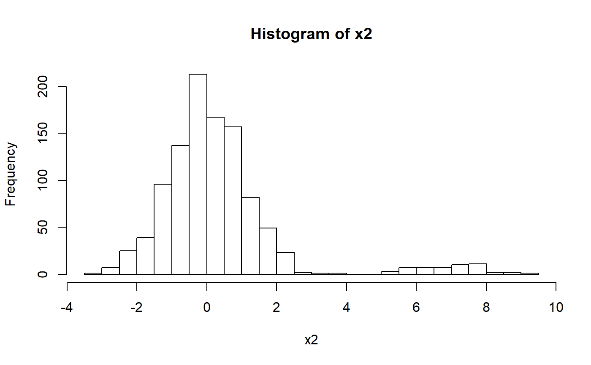
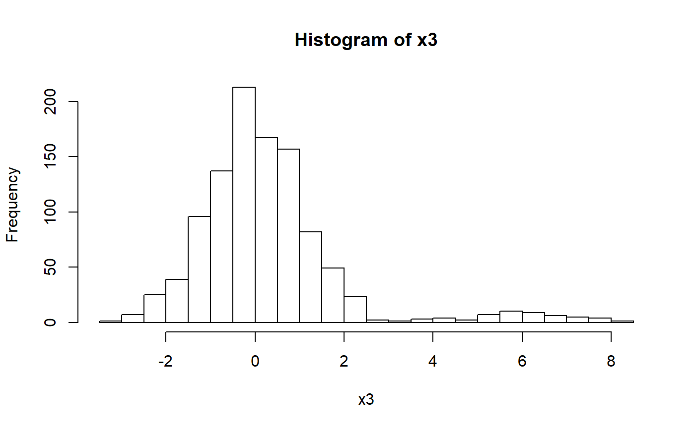

Outlier detection based on departure from histogram. Suitable for compact values (need a space between main values and outliers).
hist_out(x, breaks = nclass.scottRob, pmax_out = 0.2, nboot = NULL)Numeric vector (with compact values).
Same parameter as for hist(). Default uses a robust version
of Scott's rule. You can also use "FD" or nclass.FD for a bit more bins.
Percentage at each side that can be considered outliers at
each step. Default is 0.2.
Number of bootstrap replicates to estimate limits more robustly.
Default is NULL (no bootstrap, even if I would recommend to use it).
A list with
x: the initial vector, whose outliers have been removed,
lim: lower and upper limits for outlier removal,
all_lim: all bootstrap replicates for lim (if nboot not NULL).
set.seed(1)
x <- rnorm(1000)
str(hist_out(x))
#> List of 2
#> $ x : num [1:1000] -0.626 0.184 -0.836 1.595 0.33 ...
#> $ lim: num [1:2] -Inf Inf
# Easy to separate
x2 <- c(x, rnorm(50, mean = 7))
hist(x2, breaks = nclass.scottRob)

str(hist_out(x2))
#> List of 2
#> $ x : num [1:1000] -0.626 0.184 -0.836 1.595 0.33 ...
#> $ lim: num [1:2] -Inf 4.25
# More difficult to separate
x3 <- c(x, rnorm(50, mean = 6))
hist(x3, breaks = nclass.scottRob)

str(hist_out(x3))
#> List of 2
#> $ x : num [1:1050] -0.626 0.184 -0.836 1.595 0.33 ...
#> $ lim: num [1:2] -Inf Inf
str(hist_out(x3, nboot = 999))
#> List of 3
#> $ x : num [1:1007] -0.626 0.184 -0.836 1.595 0.33 ...
#> $ lim : num [1:2] -Inf 4.75
#> $ all_lim: num [1:2, 1:999] -Inf 3.25 -Inf 3.25 -Inf ...